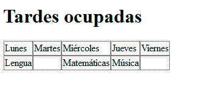
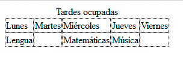
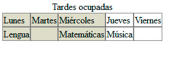
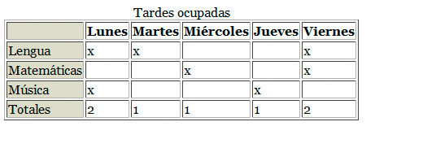
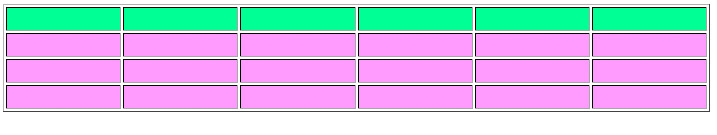
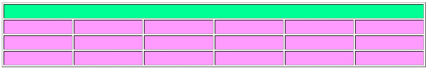
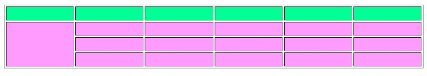

Una tabla es una serie de celdas distribuidas en filas y columnas. Cada una de esas celdas se comporta casi como una página web en pequeño. En su interior podemos insertar desde un simple número hasta las series más largas de información o elementos multimedia que se nos ocurran.
Como sucedía con las listas, HTML sólo cuenta con etiquetas capaces de definir la estructura completa de la tabla, pero no su apariencia; los colores, anchuras de línea, fondos y otros aspectos se dejan para los estilos CSS.
Veamos ahora cómo se crea una tabla.
Etiquetas básicas de una tabla
Una tabla mínima se diseña con tres etiquetas y sus respectivos cierres:
- <table> para definir el comienzo de la tabla. A la tabla le podemos añadir el parámetro border="1" para indicar si la tabla tendrá un borde.
- <tr> para indicar el comienzo de una fila.
- <td> para el comienzo de una celda.
Veamos un ejemplo de tabla
<table>
<tr>
<td>Lunes</td>
<td>Martes</td>
<td>Miércoles</td>
<td>Jueves</td>
<td>Viernes</td>
</tr><tr>
<td>Lengua</td>
<td> </td>
<td>Matemáticas</td>
<td>Música</td>
<td>m</td>
</tr></table>
Crear tablas a mano es laborioso, aunque es un buen ejercicio para entender cómo funcionan. En este ejemplo el resultado se muestra en la figura.

Etiquetas complementarias
Una tabla semánticamente correcta suele emplear algunas etiquetas más que, si bien no son necesarias, son recomendables.
- <caption>: empleada al comienzo de la tabla, le asigna un nombre general a la tabla. En la figura siguiente hemos definido un caption con el título de la tabla.

- <colgroup>: a continuación de caption podemos destacar un número de columnas con una línea similar a ésta: <colgroup style="background-color: rgb(220, 220, 200);" span="3"> </colgroup>, cuyo resultado se muestra en la figura. Se emplea el parámetro span para indicar el número de columnas que se verán afectadas.

- <thead>: permite definir una o varias filas como cabeceras de la tabla. Al utilizarla, en lugar de definir las celdas con <td> emplearemos <th>, mientras que las filas seguirán creándose con <tr>.
- <tbody>: si utilizamos thead para definir la cabecera, emplearemos también <tbody> para indicar en qué punto comienzan las filas normales de la tabla.
- <tfoot>: por último, la pareja anterior se complementa con tfoot para establecer las filas que formarán parte del final de la tabla.
El siguiente ejemplo ilustra completamente el uso de todas las etiquetas complementarias.
<table border="1">
<caption>Tardes ocupadas</caption>
<colgroup style="background-color: rgb(220, 220, 200);" span="1></colgroup>
<thead>
<tr>
<th> <br>
</th>
<th>Lunes</th>
<th>Martes</th>
<th>Miércoles</th>
<th>Jueves</th>
<th>Viernes</th>
</tr>
</thead>
<tbody>
<tr>
<td>Lengua</td>
<td>x<br>
</td>
<td> x<br></td>
<td><br></td>
<td><br></td>
<td>x<br></td>
</tr>
<tr>
<td>Matemáticas</td>
<td><br></td>
<td> <br></td>
<td>x<br></td>
<td><br></td>
<td>x<br></td>
</tr>
<tr>
<td>Música</td>
<td>x<br></td>
<td> <br></td>
<td><br></td>
<td>x<br></td>
<td><br></td>
</tr>
</tbody>
<tfoot>
<tr>
<td>Totales</td>
<td>2<br></td>
<td>1<br></td>
<td>1<br></td>
<td>1<br></td>
<td>2<br></td>
</tr>
</tfoot>
</table>
El resultado se muestra en la figura. Es largo, pero a la vez muy sencillo de entender. Podemos distinguir con facilidad la parte más administrativa de la tabla, compuesta por <caption> y <colgroup> y diferenciarla de las tres secciones de la misma, <thead>, <tbody> y <tfoot>.

Al trabajar con estilos, podremos definir apariencias muy concretas para cada parte de una tabla; ahí es donde cobra sentido el uso de las secciones, además de facilitar el trabajo de los lectores para personas con discapacidad y para los buscadores de Internet.
Tablas irregulares
Cada celda de una tabla puede contar con dos parámetros, para que la celda se extienda más allá de lo normal.
- colspan: hace que la celda se extienda hacia la derecha, tantas celdas como se indique en su valor.
- rowspan: la celda se extenderá hacia abajo, tantas filas como se indique.
Veámoslo con un ejemplo sencillo: La tabla de la figura es completamente regular.

La tabla tiene seis columnas, así que, para que la primera fila se componga de una sola celda, debemos indicarle que ésta va a superponerse sobre las otras seis. Pasaríamos de una primera fila con esta apariencia:
<tr style="background-color: rgb(102, 255, 153);">
<td> </td>
<td> </td>
<td> </td>
<td> </td>
<td> </td>
<td> </td>
</tr>
A esta otra:
<tr style="background-color: rgb(102, 255, 153);">
<td colspan="6"> </td>
</tr>
El resultado se muestra en la figura:

Hemos eliminado las otras cinco filas, para evitar que aparezcan en la parte derecha, descuadrando la tabla.
En el siguiente ejemplo hemos aplicado el valor rowspan a las tres primeras celdas de la izquierda. El código HTML es el siguiente:
<tr>
<td rowspan="3"> </td>
<td> </td>
<td> </td>
<td> </td>
<td> </td>
<td> </td>
</tr>
Y así se ve en el navegador.

El siguiente vídeo muestra algunas modificaciones más, combinando ambos parámetros.
Pregunta Verdadero-Falso
Verdadero Falso
Pregunta de Elección Múltiple
|
<rowspan> y <colspan>.
| |
|
<thead>, <tbody> y <tfoot>.
| |
|
<caption> y <colgroup>.
|